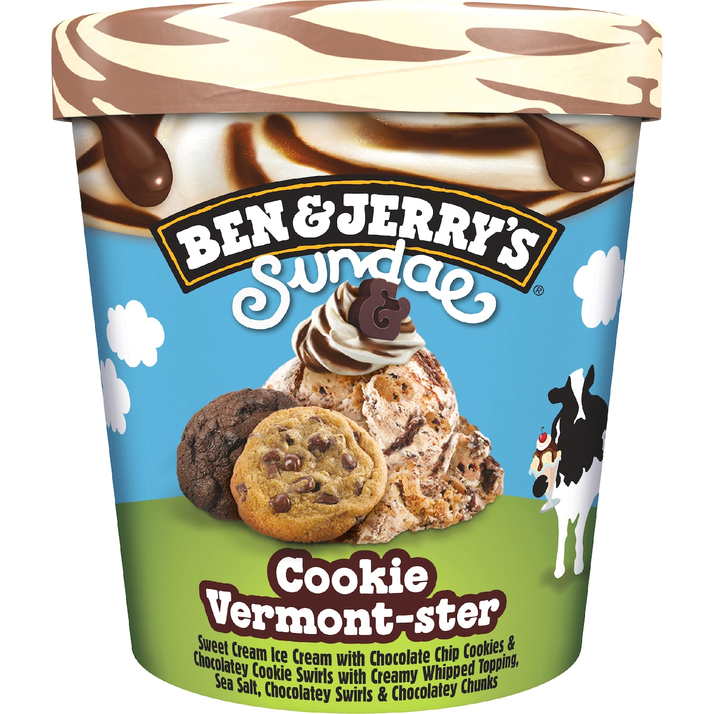
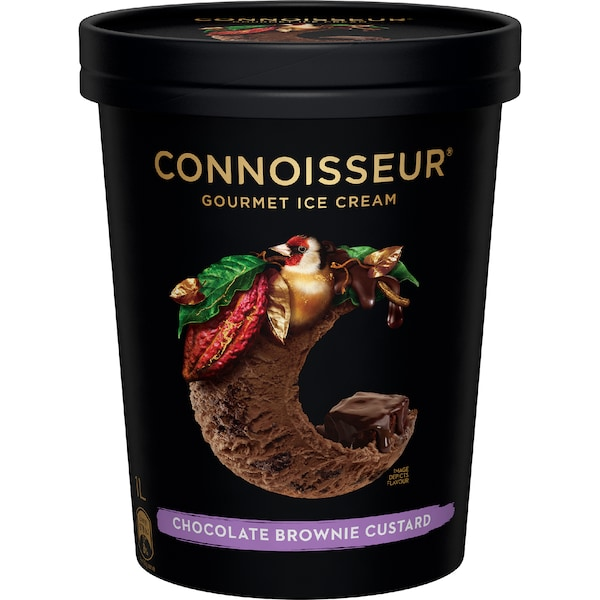
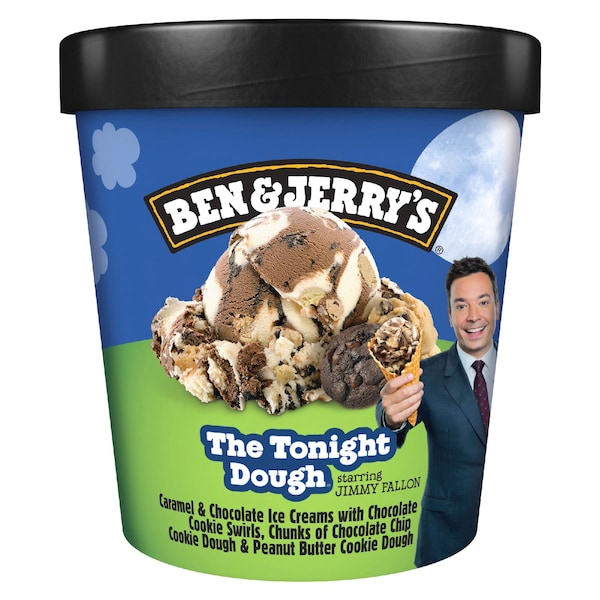

The Lebron James of ice cream.
I'm pretty strict about which ice creams I put in here.

Formerly the GOAT before Messina started selling in Woolworths. This might still be my favourite. Because I like chocolate.
Norco
'Classic Cookie Dough'
A really good double choc ice cream.
Bulla
'Choc Chip'
This right here is why Connoisseur can get away with all the random flavours it does. This is perfection. A rich, creamy, vanilla that doesn't taste artificial at all. No faults, no errors. 10/10.
Connoisseur
'Classic Vanilla'

Dulce de Leche is a milk-caramel sort of thing, and I understand that that may not be everyone's preference. Anyway, great texture, strong flavour with no weird aftertaste. 8.5/10
Messina
'Dulce De Leche'

A nice relaxed caramel ice cream, not over the top at all. The pecan's are just the right amount of crunchy to add texture but not be annoying. 9/10, maybe even 9.5
Norco
'Caramel Pecan Pie'
Really strong chocolate, kind of tastes like chocolate mousse or like chocolate cake batter. Big fan.
Really tough/dense though - it bent my spoon.
Ben & Jerry's
'Chocolate Fudge Brownie'

Maybe Ben & Jerry's is just good at chocolate ice cream. This just tastes like a double choc ice cream, although it says there's other stuff like marshmallow in there but I can't taste it.
Ben & Jerry's
'Phish Food'

This one's good you'll like it.
Connoisseur
'Derwent Valley Raspberry & White Chocolate'

Brittle is just hardened caramel, so this is caramel macadamia flavour. And thankfully, it's not overly crunchy. The caramel flavour is incredible. The macadamia adds texture. It's great.
Haagen Dazs
'Macadamia Nut Brittle'
Most ice creams will go in here. Because most ice creams are good.

This one's been my go-to for a little while. Very comforting.
Bulla
'Cookies & Cream'
Half vanilla ice cream, half lime sorbet. did we really need this? I say yes absolutely. Tastes very summery and fresh. The vanilla is just there to dilute which is super needed. 7.5/10
Golden North
'Twist Sublime Burst'
I dunno about triple caramel I don't think that's how caramel works. Tastes very good. The little bits of chocolate are nice. 8/10
Ben & Jerry's
'Triple Caramel Chunk'
The chocolate is very strong, pretty much dark chocolate, which balances out the mint which is also strong. A really nice combination, I highly recommend this one. 8.5/10
Bulla
'Choc Mint Sundae'
I went into this one expecting to hate it (I've never had a fig before) but surprisingly it's pretty good. If you like figs I'd imagine this could be your new favourite?
Maggie Beer
'Burnt Fig, Honeycomb & Caramel'

Really strong vanilla, tastes great. Did I say it's strong, because it is. It's really strong. Probably not worth the money in my opinion, but the vanilla flavour is strong.
Haagen Dazs
'Vanilla'

Not as good as the hazelnut flavour you can get at the real Messina shops. Still good.
Messina
'Hazelnut Praline'

This one is basically just cookie dough ice cream. Chocolate chip cookie dough ice cream. If that sounds good to you, you'll love this. To me it's alright I'm not the biggest fan of cookie dough so 7/10.
Ben & Jerry's
'Cookie Vermont-ster'

Kind of just a milk chocolate ice cream with a bunch of very little brownie chunks spread throughout. Can't really fault it but not mind blowing in any way. 8/10
Connoisseur
'Chocolate Brownie Custard'
Gonna have to buy this again, because it might belong in the delicious tier.
Bulla
'Vanilla Bean'

Thoroughly enjoyed this one. Really good.
Bulla
'Vanilla & Boysenberry'

I treat this as one flavour, because nobody would go in and just scoop out the vanilla, right? The idea is to get a little bit of everything, right? Well, if you do that, it's good. It's creamy, it's simple, it tastes good.
Blue Ribbon
'Classic Neopolitan'

The ice block version of this is GOAT tier. For whatever reason when they put it in a tub it's just good.
Connoisseur
'Cookies & Cream'

Creamy is right! The texture on this is phenomenal. Super soft and creamy. Strong vanilla flavour, a little bit artificial I think but goes great with cake. Not the best, not the worst. 7/10
Sara Lee
'Creamy French Vanilla'

They're right about the 'creamy classics' branding - this is very creamy. It won't make you drop your spoon and say "wow", but it tastes good. 7.5/10
Bulla
'Vanilla'

I remember trying a block of Caramilk chocolate and not liking it. However, I think this is good. I still don't know what Caramilk actually is. It's kind of white chocolate-ish, but less potent? 7/10
Cadbury
'Caramilk'

Ok so I don't really like mangos and this is just mango flavoured ice cream. I can't really taste raspberry. If you like mangos you will probably like this.
Haagen Dazs
'Mango & Raspberry'

This is unflavoured ice cream. It is not vanilla flavoured as it suggests. It tastes like nothing. But texture wise this is great. Sprinkle some drinking chocolate on top and enjoy.
Peters
'Original Vanilla'

Pretty much unflavoured ice cream. Texture is really good. This is definitely worth buying, but I would suggest mixing it with cake or brownies or something (or milo).
Blue Ribbon
'Classic Vanilla'

Does a really good job of replicating black forest cake. Cream flavoured ice cream, with cherry bits and brownie bits, and also chocolate sauce throughout. One of Connoisseur's best. 8.5/10
Connoisseur
'Black Forest'
The ice cream itself tastes really good. The crunchy bits of honeycomb are a bit too crunchy. Overall 8/10.
Violet Crumble
'Choc Honeycomb'
Flavours in here are vanilla, choc cookies, choc chip cookie dough, and salted caramel. Overall nothing special, but not bad at all. 7/10.
Much Moore
'Awesome Foursome: Cravings'
Flavours in here are vanilla, chocolate, "groovy gumdrops", and cookies & cream. The groovy gumdrops flavour overpowers any other flavour you scoop out, and it tastes a little weird. Not bad, just weird. 6.5/10.
Much Moore
'Awesome Foursome: Family Classic'

A pretty mild strawberry ice cream, but not artificial tasting at all. It has actual strawberries in it, as in little frozen chunks of strawberry, which I'm not a fan of just because they're frozen and therefore crunchy. Good otherwise. 7/10
Haagen Dazs
'Strawberries & Cream'

As with all Ben & Jerry's, there's a lot going on here, but at it's core this is salted caramel ice cream. There's some chocolate bits to balance it out which is nice, but mostly it's caramel. I think it tastes good. 8/10
Ben & Jerry's
'Dulce De-lish'
I think this is discontinued since I bought it on clearance. Peanut butter as an ice cream flavour is a bit weird to me, but the chocolate really balances it out. Surprisingly decent, 7.5/10
Maggie Beer
'Roasted Peanut Butter & Chocolate Ripple'
Very rich chocolate, maybe even a dark chocolate. The salted caramel is barely noticable but that's fine with me. Texture is great, flavour is strong. 8/10.
Maggie Beer
'Chocolate & Salted Caramel'

Tastes like mango ice cream, with macadamia nuts in it. The macadamias are fun. The ice cream texture is nice. This is good.
Norco
'Mango Macadamia'
Pretty boring. Cookie bits taste good. 7/10
Ben & Jerry's
'Chocolate Chip Cookie Dough'

Vanilla + chocolate ice cream with some cookie pieces. Tastes good but nothing special. 7/10
Ben & Jerry's
'Half Baked'

I dunno about triple vanilla, pretty sure there's just one vanilla. This does taste different to other vanilla ice creams, and it's noticably strong in flavour. Sad that it's expensive and small. 8/10.
Elato
'Triple Vanilla'

Tastes good, I'd give it a 7/10, but this should just be called 'Australian Honey' flavour. Like technically there's little fake honeycomb pieces in there. But there's only like 3 of them.
Connoisseur
'Honeycomb & Australian Honey'

Nothing ground-breaking, but tastes good. A little boring I guess but who cares.
Bulla
'Salted Caramel & Vanilla'
It pains me to put this in this tier, but it is good. The ice cream is a nice sweet/sour combo, and theres a big variety of lollies for texture which are my favourite part. I hate that I like this. A reluctant 8/10.
Norco + Minecraft
'Bubblegum Burst'
One time I ate this with a whisk!
Bulla
'Mint Choc Chip'
Look. I didn't really like this one. But that doesn't mean it's bad. It's probably good. I just don't like coffee. And that's okay. I think.
Connoisseur
'Café Grande'
Texture is a little icy, probably because they used skim milk. Flavour is fine I guess it's not mind blowing. I would say go Peters over this. Contains gluten for some reason.
Norco
'Classic Vanilla'
I'm not really a fan of this one but it's good. If "lemon curd" ice cream sounds tasty to you, you might like this. Texture and flavours are all good as with all Maggie Beer ice creams.
Maggie Beer
'Lemon Curd Ripple & Amaretti Biscuit'
I don't really think any ice creams are bad. Some are just worse than others. That's these ones. These are worse than others.

Putting this one low just because this is a "premium" vanilla, but there are "budget" vanillas that taste better.
Norco
'Ultimate Vanilla'
Vanilla custard gelato with dulce de leche. It tastes like custard which I find off-putting. People out there probably love this, but it's not for me.
Messina
'Super Flan'

Didn't like this one. Had to dilute the taste by doing 1 part this to 1 part chocolate ice cream. Took a while to get through the full 2L.
Norco
'Caramel Choc Honeycomb'

Pretty much just putting this low to remind myself to not buy it. It's not bad, there's just way too much going on. I don't need six different flavours competing for my attention in each scoop.
Ben & Jerry's
'The Tonight Dough'

If you're someone who LOVES mint then you might enjoy this. If you're the kind of person who, on occasion, treats themself with some mint chocolate ice cream, you'll think this tastes like toothpaste.
Connoisseur
'Mint & Cookies'
Would be one of the best if it didn't taste so synthetic. Don't know if they used hazelnut extract or what but it has a very stong, unpleasant aftertaste.
Connoisseur
'Roasted Hazelnut & Chocolate'
Really really sweet. Synthetic apple flavour with popping candy sprinkled throughout. Taste is fine, it's just too sweet. Also it's this toxic looking green colour which is off-putting.
Norco + Minecraft
'Candy Apple Explosion'

This is (as far as I can tell) the most expensive ice cream in Coles. Holy cow this is strong. Too strong for me. The only way to survive is to dilute this with something else, and even then it's overpowering.
Pistachio Papi
'Quattro Pistachio Explosion'